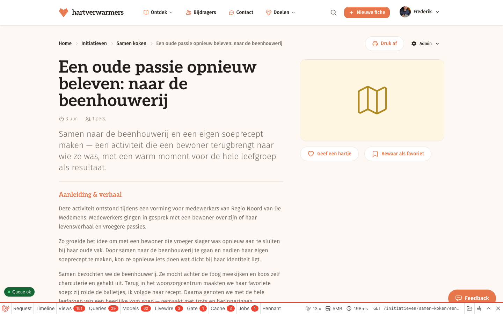
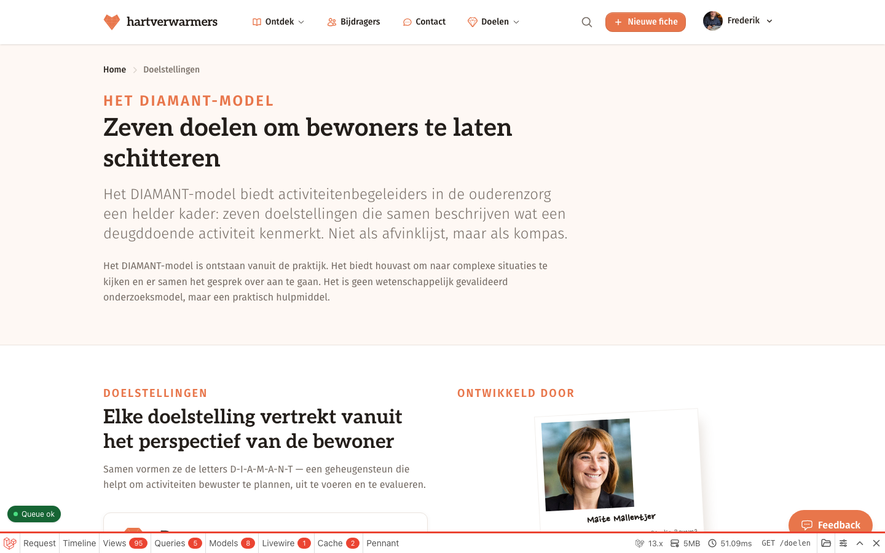
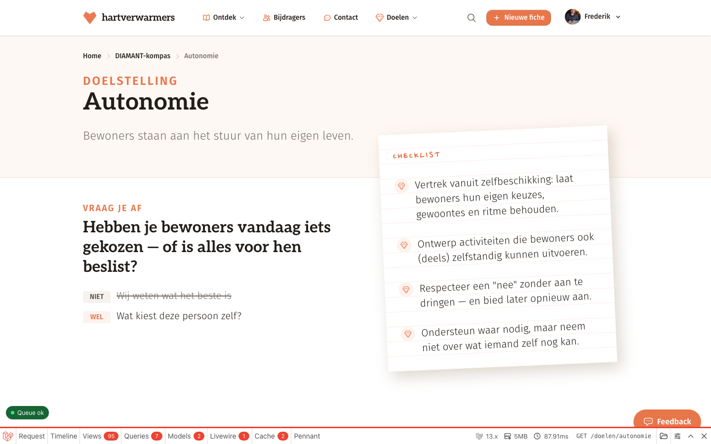

Zeven kwaliteitstools, getekend alsof ze er al zijn. Zodat we donderdag kunnen beslissen in plaats van beschrijven.
Een tweede knop naast de download.
2Het reflectieblok op de fichepagina.
3De beoordeling wordt collega-feedback.
4Zeven keer twee scènes, één tik.
5Zelfscan zonder uitslag.
6Klassiekers, twee keer verteld.
7Drie ideeën die ook op tafel liggen.
Hartverwarmers doet vandaag één ding goed: begeleidsters uit Vlaamse woonzorgcentra delen er hun activiteiten, ruim vierhonderd fiches ondertussen. De sprong die nu voorligt is een andere — van activiteiten delen naar een model dat helpt om betere activiteiten te bedenken.
Het opvallende is dat het materiaal daarvoor al klaarligt. Kernvragen, contrastparen, aanpassingen en praktijkverhalen staan al maanden gevalideerd in config/diamant.php. Op één kop na wordt er niets van getoond. De fichepagina — de drukste pagina van de site — bevat vandaag nul DIAMANT-inhoud.
De zeven tools hieronder wekken die slapende inhoud, elk op een ander moment: naast de downloadknop, op de fiche zelf, en in de opleidingszaal waar begeleidsters hun klassiekers nieuw leven inblazen. Ze worden later gebouwd achter een admin-only flag, zodat "zonder" en "met" naast elkaar te tonen zijn. Deze pagina is de stap dáárvoor.
Kop en belofte, waar het inhaakt in de bestaande code, de flow in stappen, dan de schermen — en onderaan de vraag die aan jou is.
Wat in een browservenster of op een telefoon staat, bestaat nog niet. Wat in de kleine grijze regels met een bestandspad staat, is geverifieerd tegen de codebase.
Kernvragen en contrastparen komen letterlijk uit config/diamant.php. Waar iets nieuw geschreven is, staat dat erbij.
De beenhouwerij-fiche is de vaste demo-casus, bingo de vaste klassieker. Zo vergelijk je zeven tools op hetzelfde materiaal.
Niet als "optie A of B", maar als twee getekende schermen — zodat je kan aanwijzen in plaats van beschrijven.
Per-facet kleuren bestaan vandaag nergens in de app: elke diamant is oranje, grijs of wit. Dit is de eerste beslissing die op tafel ligt, want de mockups hierna gebruiken het overal.
#E8764B
IInclusief#4CB7C5
AAutonomie#EFB13F
MMensgericht#C2666F
AAnderen#B57BB3
NNormalisatie#8AA96B
TTalent#5E7FA8
Vertrekpunt zijn de vier bestaande merktokens; alleen het geel schuift een tik naar goud, omdat het merkgeel als vlak verdwijnt tegen cream. Vijf warme noten, twee koele tegengewichten — één familie, geen regenboog. Contrast is nagerekend: elke donkere tint haalt WCAG AA tegen wit, tegen cream en tegen zijn eigen lichte tint. Kleur is een extra laag en nooit de enige betekenisdrager: de facetnaam staat overal voluit.
Vijf minuten voor je de fiche meeneemt — drie vragen, en je gaat weg met je eigen lijstje.
De rechterkolom van de fichepagina is het moment waarop een begeleidster iets meeneemt naar morgen. Daar staat de oranje downloadpill — met de hand gemaakt uit een <a> met CSS-variabelen, geen flux:button — en daar is dus ook plaats voor een tweede, lichtere knop eronder. Eén ding ligt vast: ná de download is de plek al bezet. Zodra het bestand vertrekt schuift er vandaag al een bedank-modal over het scherm. Wie iets wil meegeven, moet dus kiezen: ervóór onderbreken, of het mee in het pakket stoppen.
resources/views/fiches/show.blade.php r276–303 (de primaire downloadpill in de rechterkolom) · r336–356 (de tweede tak, zonder preview) · r211–227 (de mobiele knop, de enige flux:button) · app/Http/Controllers/FicheController.php r100–157 (de downloadflow) · resources/views/fiches/partials/post-download-nudge.blade.php (de bedank-modal die er al staat) · geverifieerd 24 augustus 2026

Straks — dezelfde rechterkolom, uitvergroot. Eén knop erbij, onder de knop die er al staat. De duur staat in de knop zelf, zodat niemand op iets onbekends moet klikken.
De downloadknop in álle mockups hierna is hypothetisch: fiche 416 heeft in werkelijkheid nul bestanden. 96 van de 420 fiches hebben een vooraf gebouwde zip.
Welke drie doelen? initiative->diamant_guidance is NULL op alle 42 initiatieven en er bestaat geen enkel schrijfpad in de app. De keuze hieronder — Mensgericht · Autonomie · Anderen — is dus met de hand gezet, precies zoals de fallback het zou doen.
Zeven schermen, in de volgorde waarin een begeleidster ze ziet. Alle vragen en alle ideeën in de vinkjes staan letterlijk in config/diamant.php — er is voor deze tool geen zin nieuwe inhoud nodig.
Samen naar de beenhouwerij en een eigen soeprecept maken — een activiteit die een bewoner terugbrengt naar wie ze was, met een warm moment voor de hele leefgroep als resultaat.
Zo groeide het idee om met een bewoner die vroeger slager was opnieuw aan te sluiten bij haar oude vak. Door samen naar de beenhouwerij te gaan en nadien haar eigen soeprecept te maken, kon ze opnieuw iets doen wat dicht bij haar identiteit ligt.
Scherm 1 — de fichepagina — identiek aan vandaag, op één knop na. De rest van de pagina blijft onaangeroerd.
Oranje, vol, bovenaan, met de grootte van het pakket erbij. Wie alleen het bestand komt halen, ziet niets veranderd.
"5 min" staat ín de knop. Deze doelgroep klikt niet op iets waarvan ze de prijs niet kent — een halve pauze is alles wat ze heeft.
Er staat niet "maak je fiche beter", en er staat geen cijfer. Het diamantje is een uitnodiging om te schitteren, geen oordeel over wat er ligt — ook niet over het werk van Maite.
De knop is een aanbod, geen sluis. Overslaan, wegklikken of nooit aanraken mag; het bestand blijft één tik ver. De rest van de kolom — hartje, favoriet — blijft staan waar ze stond.
Stap 1 van 3 — Mensgericht — de kernvraag staat er letterlijk zoals ze in de config staat; de drie vinkjes zijn de drie adaptations van dit doel. Nog niets aangevinkt, en dat mag zo blijven.
Stap 2 van 3 — Autonomie — één idee aangevinkt: proeven van twee smaken, bij een fiche die over soep gaat. Aanvinken is één tik; er valt niets te typen.
Zitten je bewoners naast elkaar — of zijn ze echt met elkaar verbonden?
Stap 3 van 3 — Anderen — korter getekend, want tegen de derde stap heeft ze het patroon door. De laatste knop heet "Toon mijn lijstje", niet "Voltooien" — er valt niets te voltooien.
Drie kleine dingen. Meer moet het niet zijn.
Alleen jij ziet dit lijstje. De fiche van Maite verandert er niet door.
Het eindscherm — haar drie zinnen op papier, op een prikbord. Geen samenvatting van wat ze fout deed; alleen wat ze zelf aanvinkte, in de woorden van de config.
Op haar gsm — hetzelfde lijstje als spiekkaart, groot genoeg om te fotograferen. Wat er in haar zak zit, gaat mee naar de leefgroep; wat in haar mailbox blijft, niet.
Je hebt niets aangevinkt. Ook goed — je kent je bewoners het best. De fiche staat klaar.
Als ze alles overslaat — de lege staat is een volwaardig eindscherm, geen mislukking. Drie keer "Sla over" leidt naar de download, niet naar een verwijt.
De schermen hierboven onderbreken haar vóór de download. De tweede piste doet het omgekeerde: niets op het scherm, maar een begeleidend blad ín het pakket dat ze toch al meeneemt. Dezelfde inhoud, een ander moment — en een andere prijs.
Eén bestand erbij, altijd als laatste, altijd met dezelfde naam.
Variant B, scherm 1 — de zip zoals ze op haar bureaublad openklapt. Het vierde bestand is het enige nieuwe.
Deze fiche staat rond drie DIAMANT-doelen. Hieronder per doel één vraag om jezelf te stellen en één idee om iets te verschuiven. Doe ermee wat je wil — of leg het weg.
Variant B, scherm 2 — het blad zelf: per doel de kernvraag en de eerste aanpassing uit de config. Eén blad, gemaakt om op een scherm te lezen, met niets erop dat ingevuld moet worden.
Waar dit ingepakt zou worden: de lus in app/Http/Controllers/FicheController.php r150–152 ($zip->addFile(…)) krijgt er één addFromString() bij. Twee hobbels. De tak op r137–143 gebruikt een vooraf gebouwde zip en slaat die lus over — dat zijn 96 van de 420 fiches. En bij één bestand maakt de app vandaag helemaal geen zip (r128–135): dan zou ook die tak naar de zip-route moeten, en krijgt iemand die één pdf komt halen er plots een tweede bij.
Wat neemt een begeleidster écht mee naar morgen — drie vragen die ze zelf beantwoordt vóór ze downloadt, of een blad dat mee in de map zit? Als het er maar één mag zijn, welke?
Denkdag 27 augustusVeertien zinnen die al maanden in de config staan, eindelijk op het scherm waar ze thuishoren.
De fichepagina is de drukste pagina van de site en toont vandaag nul DIAMANT-inhoud. Een grep op diamant in de 555 regels van de fichetemplate geeft één treffer: "Diamantje toekennen", de curator-award. Niet het model. Het nieuwe blok schuift tussen "Aanleiding & verhaal" en de inklapbare kaart "Praktische informatie" — precies daar waar een begeleidster klaar is met lezen en nog niet weet wat ze ermee doet.
resources/views/fiches/show.blade.php r198–210 (Aanleiding & verhaal) · r228–266 (Praktische informatie) · r72 (de enige diamant-treffer) — geverifieerd 24 aug 2026
Het accordeon bestaat al: resources/views/initiatives/show.blade.php r265–307 — Alpine x-data="{ open: {} }" met x-collapse, chevron die 180° draait, en onderaan de body één .cta-link "Bekijk doel". Dat patroon wordt hier één op één overgenomen.
Rendercheck: contrast_positive, contrast_negative en adaptations komen nergens in resources/views/ voor; core_question staat alleen op goals/show.blade.php r29.
Welke drie doelen bij deze fiche? initiative->diamant_guidance is NULL op alle 42 initiatieven — in de mockup staan Mensgericht · Autonomie · Anderen vast. De enige werkbare bron vandaag zijn de goal-tags van het initiatief ("Samen koken" heeft er twee).
config/diamant.php. Geen enkele komt ooit op een scherm. Flag aan, en slapende tekst wordt een spiegel.Zo groeide het idee om met een bewoner die vroeger slager was opnieuw aan te sluiten bij haar oude vak. Ze mocht achter de toog meekijken en koos zelf charcuterie en gehakt uit…
Versie 1 — drie doelen, drie vragen, één link. Dezelfde pagina, dezelfde volgorde, drie rijen ertussen. Wie doorscrollt naar de praktische info mist niets; wie blijft hangen, leest voor het eerst een vraag over haar eigen werk.
"Vertrekken vanuit levensverhaal en identiteit van de persoon."
Roger was bakker. Tijdens het bakmoment vertelt hij over zijn ambacht — de groep luistert geboeid.
Iedereen kleurt dezelfde kleurplaat. Niemand heeft gevraagd of dit aansluit bij wie deze mensen zijn.
"Bewoners hebben keuze, bepalen (mee) wat er gebeurt."
Georgette kiest elke vrijdag welk muzieknummer als eerste wordt gespeeld. Dat moment is van haar.
De begeleidster deelt materialen uit en zegt: "Vandaag maken we allemaal een vlinder." Niemand heeft iets gekozen.
"Sociale verbinding en wederkerigheid — niet naast maar met elkaar."
Hilda en Willy drinken elke ochtend samen koffie. Ze praten niet altijd — soms is samen stilzijn genoeg.
Tien bewoners zitten in een kring. De begeleidster doet een spel. Niemand kijkt naar elkaar — alleen naar haar.
Versie 2 — dezelfde rij, opengeklapt. Autonomie staat open, de twee andere staan dicht. Klik gerust: de drie rijen openen echt, ook zonder JavaScript — het zijn details-elementen.
Rechts is grijs-neutraal, niet fout. Het label zegt "Zo gaat het soms" — een beschrijving, geen oordeel. Wie de rechterkolom herkent, wordt nergens betrapt.
De vraag verdwijnt niet in de kop. Ze blijft leesbaar boven de twee scènes, zodat het paar een antwoord op iets is en niet twee losse verhaaltjes.
Exact de link die vandaag al onder elk accordeonitem op de initiatiefpagina staat. Voor het eerst krijgen de doelpagina's verkeer vanaf de fiches — het model wordt bereikbaar op de plek waar mensen toch al zijn.
Eén gedeeld open-object, geen accordeon die andere rijen dichtklapt. Wie alle drie wil lezen, hoeft niets te sluiten. Wie niets opent, ziet versie 1.
"Vertrekken vanuit levensverhaal en identiteit van de persoon."
Roger was bakker. Tijdens het bakmoment vertelt hij over zijn ambacht — de groep luistert geboeid.
Iedereen kleurt dezelfde kleurplaat. Niemand heeft gevraagd of dit aansluit bij wie deze mensen zijn.
Het tweede paar — Mensgericht. Roger en de kleurplaat. Twee zinnen die woord voor woord uit config/diamant.php komen; niemand heeft ze ooit gezien.
"Sociale verbinding en wederkerigheid — niet naast maar met elkaar."
Hilda en Willy drinken elke ochtend samen koffie. Ze praten niet altijd — soms is samen stilzijn genoeg.
Tien bewoners zitten in een kring. De begeleidster doet een spel. Niemand kijkt naar elkaar — alleen naar haar.
Het derde paar — Anderen. De kring met het spel is de scène die het vaakst wordt herkend. Ze staat er zonder verwijt: tien bewoners in een kring is werk, geen fout.
Hebben je bewoners vandaag iets gekozen — of is alles voor hen beslist?
Twee versies van hetzelfde moment.
Georgette kiest elke vrijdag welk muzieknummer als eerste wordt gespeeld. Dat moment is van haar.
De begeleidster deelt materialen uit en zegt: "Vandaag maken we allemaal een vlinder." Niemand heeft iets gekozen.
Op de gsm — gestapeld. De kernvraag krijgt hier de lijntjespapier-stijl en de twee scènes staan onder elkaar, met de regel "Twee versies van hetzelfde moment" ertussen zodat de volgorde niet als rangschikking leest.
"Aansluiten bij hoe mensen thuis zouden leven — vertrouwd en herkenbaar."
De geur van vers gebakken appeltaart verspreidt zich door de gang. Bewoners komen spontaan kijken.
Om 14u stipt begint "de activiteit" in de activiteitenruimte. Bewoners worden opgehaald en in een kring gezet.
Randgeval — één doel gekoppeld. Het blok krimpt mee: één rij, één vraag, dezelfde link. Nooit zeven rijen om het vol te maken, nooit lege streepjes voor de doelen die er niet zijn.
Deze activiteit ontstond tijdens een vorming voor medewerkers van Regio Noord…
Randgeval — geen doelen. Dan staat er niets. Geen kop met een uitleg waarom het leeg is, geen uitnodiging aan de begeleidster om iets in te vullen. De stippellijn is annotatie, geen interface.
De briefing koos ze allebei. Hieronder staan ze klein naast elkaar, zodat je kan aanwijzen in plaats van beschrijven: links wat iedereen ziet, rechts wat er gebeurt als iemand blijft hangen.
Versie 1 — alleen de kernvraag. Drie regels, geen chevrons, niets om aan te tikken. De pagina wordt zeven centimeter langer en verder verandert er niets.
"Vertrekken vanuit levensverhaal en identiteit van de persoon."
Bekijk doel"Bewoners hebben keuze, bepalen (mee) wat er gebeurt."
Georgette kiest elke vrijdag welk muzieknummer als eerste wordt gespeeld. Dat moment is van haar.
De begeleidster deelt materialen uit en zegt: "Vandaag maken we allemaal een vlinder." Niemand heeft iets gekozen.
"Sociale verbinding en wederkerigheid — niet naast maar met elkaar."
Bekijk doelVersie 2 — uitklapbaar, met het contrastpaar. Dezelfde drie rijen, nu met een chevron. Eén open rij maakt de pagina ruim dubbel zo lang; drie open rijen duwen de praktische info ver naar onder.
diamant_guidance is leeg op alle 42 initiatieven. Zonder bron geen blok.Werkt het contrastpaar ook als een begeleidster alleen achter haar scherm zit — of heeft het altijd een gesprek nodig om te landen?
Denkdag 27 augustusDe beoordeling die vandaag alleen de admin ziet, teruggegeven aan wie de fiche schreef — zonder het cijfer.
Elke fiche wordt vandaag al meegelezen. Een agent schrijft er twee motivaties bij — één over de inhoud, één over de presentatie — in Vlaams Nederlands, met de uitdrukkelijke instructie om te klinken als een collega die meedenkt, niet als een beoordelaar die afvinkt. Die tekst gaat naar de database en blijft daar liggen. 406 van de 420 fiches hebben er ondertussen één. De begeleidster die de fiche schreef, heeft er nog nooit één gezien.
Er is al een plek op de pagina die alleen voor haar bedoeld is: de suggestiebalk bovenaan, met de kop "Zet je fiche nét wat scherper". Het nieuwe kaartje komt daar vlak onder. Geen nieuw scherm, geen extra klik, geen mail.
app/Jobs/AssessFicheQuality.php r64–73 schrijft quality_justification en
presentation_justification weg · toon uit app/Ai/Agents/FicheQualityAgent.php ·
vandaag uitsluitend getoond in resources/views/livewire/admin-fiche-overview.blade.php r50–70
en r103–116 · nieuwe plek: resources/views/fiches/show.blade.php r92–147
(auth()->id() === $fiche->user_id) · geverifieerd 24 aug 2026
"Deze activiteit raakt bijna alle DIAMANT-doelen op een heel organische manier: ze vertrekt vanuit het levensverhaal van de bewoner (mensgericht), geeft haar echte regie over keuzes en het recept (autonomie), laat haar actief meewerken (doen) en sluit naadloos aan bij het gewone leven van een slager (normalisatie)."
— staat vandaag in de database, fiche 416
Geen mockup — dit bestaat. Alleen de admin ziet deze zinnen. Het cijfer dat ernaast in dezelfde rij staat, tonen we hier bewust niet, en op de fichepagina straks evenmin.
Je vertrekt van wie zij is: veertig jaar achter de toog van haar eigen slagerij. Dat is Mensgericht ten voeten uit. En ze kiest zélf de charcuterie — niemand kiest voor haar. Dat de leefgroep daarna haar soep eet, maakt er ook een moment van Anderen van.
Meegelezen door onze digitale collega — het laatste woord is altijd aan jou.
Samen naar de beenhouwerij en een eigen soeprecept maken — een activiteit die een bewoner terugbrengt naar wie ze was, met een warm moment voor de hele leefgroep als resultaat.
Aanleiding & verhaal · Praktische informatie · Reacties
Versie 1 — alleen de waardering. De fichepagina zoals Maite ze ziet als ze ingelogd is op haar eigen fiche. Een bezoeker ziet dit kaartje niet.
De fiche waar dit over gaat heeft in de database een kwaliteitsscore staan. Die komt hier niet, niet als getal, niet als sterren, niet als "top 10%". Wie een cijfer krijgt, gaat het volgende keer halen — en dan schrijft ze voor de agent in plaats van voor haar collega's.
Mensgericht, Autonomie, Anderen — geen losse letters, geen jargon. Zo leert ze het model terwijl ze haar eigen activiteit herkent, zonder dat iemand het uitlegt. Kleur is een extra laag, nooit de enige drager.
"Het laatste woord is altijd aan jou" staat er niet als disclaimer maar als machtsverhouding. Zij kent haar bewoners, de agent kent alleen haar tekst.
Hetzelfde slot als de suggestiebalk erboven: auth()->id() === $fiche->user_id.
Geen curator, geen bezoeker, niets in de zoekresultaten. Waardering is privé, anders wordt het een
rangschikking.
Je vertrekt van wie zij is: veertig jaar achter de toog van haar eigen slagerij. Dat is Mensgericht ten voeten uit. En ze kiest zélf de charcuterie — niemand kiest voor haar.
Meegelezen door onze digitale collega — het laatste woord is altijd aan jou.
Op de gsm — de vorm waarin ze het echt zal lezen, tussen twee bewoners door. Drie zinnen, en geen enkele knop die iets van haar vraagt.
Een vast uurtje buiten met de hele leefgroep, ook als het fris is — met een deken en een tas koffie erbij.
Aanleiding & verhaal · Praktische informatie · Reacties
De lege staat — 14 van de 420 fiches zijn nog niet meegelezen. Dan staat er niets. Geen "nog niet beoordeeld", geen wachtbalkje, geen belofte dat het komt. Het kaartje verschijnt later vanzelf, of het verschijnt niet.
Links wat er staat als we het bij erkenning houden. Rechts hetzelfde kaartje met één vraag eronder. Alles erboven is identiek — het verschil is precies vier regels, en toch verandert het waarvoor het kaartje er staat.
Je vertrekt van wie zij is: veertig jaar achter de toog van haar eigen slagerij. Dat is Mensgericht ten voeten uit. En ze kiest zélf de charcuterie — niemand kiest voor haar. Dat de leefgroep daarna haar soep eet, maakt er ook een moment van Anderen van.
Meegelezen door onze digitale collega — het laatste woord is altijd aan jou.
Versie 1 — het kaartje is af na de laatste zin. Er is niets aan te klikken, dus er is ook niets af te maken.
Je vertrekt van wie zij is: veertig jaar achter de toog van haar eigen slagerij. Dat is Mensgericht ten voeten uit. En ze kiest zélf de charcuterie — niemand kiest voor haar. Dat de leefgroep daarna haar soep eet, maakt er ook een moment van Anderen van.
Zou zij de bestelling ook zelf kunnen doorgeven aan de beenhouwer?
— gedacht vanuit Autonomie
Meegelezen door onze digitale collega — het laatste woord is altijd aan jou.
Versie 2 — één kans, altijd als vraag. "Ze is goed zo" staat er even groot bij als "Vul mijn fiche aan": nee zeggen is hier een keuze, geen uitstel.
Je vertrekt van wie zij is: veertig jaar achter de toog van haar eigen slagerij. Dat is Mensgericht ten voeten uit. En ze kiest zélf de charcuterie — niemand kiest voor haar.
Genoteerd. We vragen het niet opnieuw.
Meegelezen door onze digitale collega — het laatste woord is altijd aan jou.
De bevestiging — de vraag verdwijnt en komt niet terug. Geen "misschien later", geen tweede poging over een maand.
Wat werkt
Wat wringt
Wat werkt
Wat wringt
"Mag die ene kans er meteen bij staan, of moet de eerste keer dat iemand feedback krijgt op haar fiche puur waardering zijn — en de kans pas bij een tweede bezoek?"
Denkdag 27 augustusZeven keer twee scènes, telkens één tik — en je gaat naar buiten met drie dingen om morgen te proberen.
Nergens — en dat is het punt. Dit is de eerste tool van de dag die niet aan een fiche hangt. Ze
vertrekt van de activiteit die een begeleidster al jaren doet en die op geen enkele
fiche staat: de bingo van elke dinsdag. Een nieuwe route naast /doelen, met dezelfde
look als de doelenpagina's. Het materiaal ligt wél klaar: per facet staan er een positieve en een
neutrale scène in de config, plus drie aanpassingen die als "idee om op te schuiven" dienen. Enkel
de vertaling naar bingo is nieuw geschreven.
config/diamant.php — contrast_positive · contrast_negative ·
adaptations[] voor alle zeven facetten · geverifieerd 24 aug 2026. Vandaag gerenderd in
resources/views/: nergens — de enige hit op facetteksten is
resources/views/goals/show.blade.php r29 (core_question als kop).

Kies er één. Je kan er later een andere doen.
Tien minuten. Je hoeft niets te typen en niets te bewaren.
Scherm 1 — kies je klassieker — acht tegels, één tik. "Mijn activiteit staat er niet bij" leidt naar de AI-variant verderop; zonder AI-sleutel valt die knop weg en blijven de acht tegels.
config/diamant.php. Alleen de bingovertaling is bijgeschreven.
De zeven schermen lopen in de volgorde van het model: Doen · Inclusief · Autonomie · Mensgericht · Anderen · Normalisatie · Talent. Elk doel kan overgeslagen worden; wie na drie schermen stopt, krijgt een kortere spiekkaart.
Bewoners doen zelf mee. Actief, niet alleen toeschouwer.
Scherm 2 — herkennen, doel 1 van 7: Doen — geprojecteerd op de denkdag kan je hier écht tikken: beide knoppen werken, geen van de twee wordt "goed".
Twee polaroids, even groot, even warm. De knoppen eronder zijn even zwaar en zeggen alleen wélke op haar versie lijkt — nooit welke de juiste is. Wie B aantikt krijgt hetzelfde vervolgkaartje als wie A aantikt.
Zeven segmenten in de zeven facetkleuren, met "Nog zes doelen te gaan" eronder. Waar er wel geteld wordt, telt het doelen — nooit punten, nooit een percentage. Je ziet dat je vooruit gaat zonder dat iets je meet.
Geen uitleg over het model, geen definitie van Doen. De facetnaam en zijn zin uit de config staan erboven; de rest is herkennen. Wie weinig tijd heeft, is er in tien seconden door.
"Sla dit doel over" staat in dezelfde maat als de rest, niet als grijs linkje onderaan. En stoppen kan altijd: de spiekkaart toont dan wat er tot dan op stond.
Eén idee om op te schuiven:
Geef één taak uit handen: nummers roepen, kaarten delen, of de prijzenmand vasthouden.
Niets hiervan wordt bewaard voor iemand anders.
Scherm 3 — het tussenkaartje — schuift open na de tik. "Herkenbaar", nooit "goed gekozen". Het idee is de adaptation uit de config; "Laat maar" is even groot als "Zet op mijn spiekkaart".
Bewoners behouden regie. Ze kiezen zelf hoe en wanneer.
Eén idee om op te schuiven:
Laat de winnaar kiezen. Één keuze volstaat om het moment van hen te maken.
Scherm 4 — doel 3 van 7: Autonomie — hier tikte ze de tweede scène aan. Zelfde kaartje, zelfde toon, zelfde idee. Dat het antwoord niets verandert aan wat er komt, is precies wat "geen goed of fout" betekent.
Bewoners schitteren. Vanuit wat ze wel kunnen.
Eén idee om op te schuiven:
Zoek één iemand met een geschikt talent: een heldere stem, een goed oog, een vaste hand.
Scherm 5 — doel 7 van 7: Talent — het patroon houdt vol tot het einde: zelfde raamwerk, andere kleur, andere twee zinnen. Zeven keer hetzelfde ritme is wat het licht maakt.
Drie dingen om te proberen bij je volgende bingo.
Scherm 6 — de spiekkaart — groot genoeg om te fotograferen, kort genoeg om te onthouden. Geen samenvatting van het model, geen uitslag: drie zinnen die zij zelf heeft aangetikt.
Je spiekkaart is leeg gebleven. Ook goed — jij kent je bewoners het best.
Scherm 7 — alles overgeslagen — de lege staat is geen mislukking en zegt dat ook. Geen "je hebt niets gedaan", geen aansporing om terug te gaan die zwaarder weegt dan "Sluiten".
Een fiche schrijven is werk voor achteraf. Wat een begeleidster uit een opleidingsnamiddag meeneemt, is drie zinnen die ze dinsdag kan proberen. De brug naar het platform komt pas als het gelukt is — dat is tool 7, niet deze.
Geen enkele van de zeven schermen vraagt om te typen. De enige tekst die zij produceert, zijn de zinnen die ze aantikt.
De zeven bingoparen voluit. Drie ervan staan hierboven getekend. De vier andere lezen precies hetzelfde — één beeld links, één beeld rechts, één idee eronder:
| Doel | Bingo A zoals het vaak gaat | Bingo B zoals het kan schitteren | Eén idee om op te schuiven uit adaptations[] |
|---|---|---|---|
| I Inclusief | De nummers worden één keer geroepen. Wie slecht hoort, mist de helft. | De nummers gaan ook op een groot bord. Jeanne volgt mee met haar vinger. | Roep én toon. Wie niet hoort, kan meelezen; wie niet leest, hoort het. |
| M Mensgericht | Nummers zijn nummers. Er wordt niets bij verteld. | Bij 22 roept iemand "twee zwaantjes" — zoals vroeger in de parochiezaal. | Vraag vooraf: waar speelde jij bingo? De verhalen komen vanzelf. |
| A Anderen | Tien mensen zitten in een kring en kijken naar de begeleidster. | Wie snel is, helpt zijn buur zoeken. Hilda en Willy spelen samen op één kaart. | Zet twee bewoners op één kaart. Samen zoeken is samen praten. |
| N Normalisatie | Om 14u stipt in de activiteitenruimte, met de stoelen in een kring. | Bingo aan de keukentafel, met koffie erbij. Wie voorbijkomt, schuift aan. | Verplaats het naar de huiskamer en laat mensen aanschuiven in plaats van ophalen. |
De onderliggende contrastparen staan letterlijk in config/diamant.php; de bingovertaling erboven is nieuw geschreven, in dezelfde toon: één bewoner bij naam, één concreet beeld, geen oordeel. Voor een tweede klassieker moeten er opnieuw veertien zinnen geschreven worden — dat is het echte werk achter deze tool.
De gecureerde versie is alles hierboven: acht klassiekers, per klassieker veertien geschreven scènes. De AI-versie laat haar in twee zinnen vertellen wat zij doet, en herschrijft dezelfde zeven paren naar háár namiddag. Beide eindigen op dezelfde spiekkaart.
Zoals je het aan een collega zou vertellen.
Elke dinsdag bingo in de cafetaria, met een prijzentafel en koffie achteraf.
Je tekst wordt gebruikt om de scènes te herschrijven en daarna weer vergeten.
AI-scherm a — vertel het in twee zinnen — het enige moment in de hele werkvorm waar getypt wordt, en zelfs dat is te vermijden met "Kies liever uit de tegels".
Klopt er iets niet? Toon de algemene scènes
AI-scherm b — dezelfde vraag, haar cafetaria — vergelijk met scherm 2 hierboven: identiek raamwerk, alleen de twee zinnen zijn herschreven. Terug naar de gecureerde scènes kan met één tik.
We tonen de algemene scènes — even herkenbaar.
Bingo is bingo, waar je ze ook speelt.
AI-scherm c — zonder sleutel — geen foutmelding, geen "AI niet beschikbaar", geen technische taal. De werkvorm loopt door met de gecureerde scènes; zij merkt er niets van.
De acht tegels blijven de standaard; de AI zit achter de knop "Mijn activiteit staat er niet bij". Dan is de opleidingszaal altijd gecureerd en identiek, en dient AI alleen de begeleidster die thuis iets doet dat nergens in de lijst staat. Zonder sleutel verdwijnt die ene knop — de rest merkt er niets van.
Werkt dit als individuele opwarmer vóór jouw plenaire A/B-oefening — of neemt het scherm net weg wat het gesprek in de groep moet doen?
Denkdag 27 augustusEenentwintig korte stellingen over één activiteit die je vaak doet — en op het einde geen uitslag, maar een spiegel.
Nergens — dit is een nieuw scherm naast /doelen, en het enige van de zeven tools dat niet aan een fiche hangt. Wat het wél hergebruikt, staat er al: per facet één tip die precies past bij een groeikans, één "ik wil"-zin die als kopregel dienstdoet, en één linktekst naar de facetpagina. De scan zelf voegt daar één ding aan toe dat vandaag nergens bestaat: de stellingen.
config/diamant.php — tip_title, tip_text, ik_wil en initiatives_heading zijn per facet ingevuld · core_question wordt vandaag alleen gerenderd op resources/views/goals/show.blade.php r29 · geverifieerd 24 aug 2026

tip_title + tip_text, exact één per facet. Voor Autonomie: "Laat de regie waar ze hoort — autonomie gaat niet over het aanbieden van keuzes, maar over zelfbeschikking."ik_wil. Voor Doen: "Bewoners doen zelf mee, zijn actief, niet alleen toeschouwer."initiatives_heading, letterlijk: "Initiatieven die talent laten schitteren", naar goals.show (/doelen/talent).Vijf schermen: het begin, één stelling groot, dezelfde stelling op de gsm, het resultaatblad, en wat er gebeurt als iemand overal "klopt niet" antwoordt.
Eenentwintig korte stellingen over één activiteit die je vaak doet. Vijf minuten. Er is geen uitslag, alleen een spiegel.
Invullen mag, het hoeft niet. Wat je typt, blijft op jouw scherm staan.
Stoppen kan op elk moment. Niemand anders ziet wat je aanduidt.
Startscherm — geen registratie, geen naam, geen tijdsklok. De belofte staat er meteen: "geen uitslag, alleen een spiegel". Het invulveld is de enige plek in de hele scan waar getypt kán worden — en het mag leeg blijven.
Bij mijn activiteit heeft een bewoner een rol, geen plaats.
Toon mijn spiegelDe laatste stelling — de knop heet Toon mijn spiegel, niet "Bekijk je resultaat". Ook hier staat "Sla deze over" er nog altijd bij: de laatste stelling is niet meer verplicht dan de eerste.
Bij mijn activiteit kiest een bewoner zelf iets — hoe klein ook.
Er is geen juist antwoord. Je beschrijft je eigen activiteit, meer niet.
Eén stelling, één scherm — de tweede tot en met de eenentwintigste keer ziet er precies zo uit. Alleen de gem, de facetnaam en de zin wisselen; de drie knoppen staan altijd op dezelfde plaats.
Elke tikknop is minstens 46 pixels hoog en even breed als de andere twee. Geen radiobuttons, geen schuifbalk, geen "helemaal mee eens" tot "helemaal niet mee eens" met cijfers eronder. Wie halverwege staat te lezen op haar gsm, mikt met één duim.
Zeven segmenten, één per doel: gevuld wat achter haar ligt, omcirkeld waar ze nu zit. Ze ziet dat het opschiet zonder dat er ooit een getal in beeld komt. Het label eronder telt doelen, geen punten.
"Kiest een bewoner zelf iets" kan je zien gebeuren. "Ben ik voldoende bewonersgericht" niet — en die vraag beantwoordt niemand eerlijk over zichzelf. Elke stelling begint met "Bij mijn activiteit", zodat het over de activiteit gaat en niet over haar.
"Sla deze over" is een volwaardige knop in dezelfde maat, geen grijs linkje onderaan. Een stelling die niet past bij haar activiteit hoeft ze niet te forceren — een overgeslagen stelling belandt straks in geen enkele kolom.
Bij mijn activiteit kiest een bewoner zelf iets — hoe klein ook.
Sla deze overJe kan altijd terug.
Op de gsm — de vorm waarin ze het echt zal doen: staand in de gang, tijdens de koffiepauze, met één duim. Hier is "Klopt een beetje" aangeduid: de knop kleurt in de facetkleur, er verschijnt geen bevestiging, geen "goed zo", geen punten.
Kies er één uit om deze maand mee te spelen. Volgende maand mag je een andere kiezen.
Nog eens proberen met een andere activiteit? Dat mag meteen.
Randgeval — iemand die overal "klopt niet" aanduidt. Geen lege balk, geen nul: één facet om mee te spelen, met de tip die er al staat. De lege kolom wordt benoemd zonder dat het aan haar ligt.
Dit is geen test en geen score. Het beschrijft wat jij zelf hebt aangeduid, geordend per doel.
Dit staat er niet om je gerust te stellen. Het staat er omdat je het zelf hebt aangeduid.
Inclusief, Mensgericht en Normalisatie stonden bij jou tussenin. Die laten we staan zoals ze zijn.
Het resultaatblad — twee kolommen, geen balk, geen cijfer, geen volgorde van beste naar slechtste. Links krijgt de warme cream-achtergrond, rechts blijft wit: niet omdat rechts fout is, maar omdat links gevierd wordt. De drie doelen waar ze "klopt een beetje" antwoordde, komen in geen van beide kolommen — die tussenzone benoemen we in één regel onderaan in plaats van ze te sorteren.
De drie schermen hierboven tonen er twee. Voor de volledigheid staan ze hier alle eenentwintig — drie per doel, telkens te beantwoorden met klopt · klopt een beetje · klopt niet. Dit is de aanzet die voor deze pagina geschreven is, niet de definitieve lijst.
| Doel | Drie stellingenAllemaal in de vorm "Bij mijn activiteit …" — een handeling, geen deugd. |
|---|---|
| DDoen |
|
| IInclusief |
|
| AAutonomie |
|
| MMensgericht |
|
| AAnderen |
|
| NNormalisatie |
|
| TTalent |
|
Eén variant, geen twee: de briefing koos hier bewust de solo-scan met resultaatblad. Wat nog openstaat, is de inhoud — niet de vorm.
Twee kolommen zonder cijfer — leest een begeleidster "hier zit een groeikans" als een uitnodiging, of hoort ze er toch een beoordeling in?
Denkdag 27 augustusAcht klassiekers, twee keer verteld — met de verschoven zinnen gemarkeerd.
Dit is de enige tool van de zes die nergens in een bestaand scherm binnenkruipt: het is een nieuwe
pagina naast /doelen. Het patroon eronder bestaat wél, en het is het
lichtste van de hele app. ToolsInspirationController::index() loopt over de bestanden in
één map op de content-schijf en neemt basename($file, '.json') als slug — een map ís de
galerij. Geen indexbestand, geen tabel, geen migratie.
Voor de Schittergalerij wordt dat resources/content/schittergalerij/{slug}.json, geladen
via JsonContent::getContent(). Eén klassieker erbij is één bestand erbij. Dat is de
reden waarom deze tool de goedkoopste van de zes is om te vullen — en waarom ze staat of valt met
wie de teksten schrijft.
app/Http/Controllers/ToolsInspirationController.php · app/Services/JsonContent.php
· patroon van resources/content/tools/ (3 bestanden vandaag) · geverifieerd 24 aug 2026
Geen stap is verplicht, er is niets in te vullen en er wordt niets bewaard. Bladeren is de hele interactie — dat is bewust: dit is het scherm dat een begeleidster tijdens haar koffiepauze aankan.
Dezelfde namiddag, twee versies. Kijk wat er verschuift — en neem mee wat past bij jouw huis.
Acht namiddagen die in bijna elk woonzorgcentrum bestaan. Geen ervan is fout — ze zijn alleen twee keer verteld.
Scherm 1 — de galerij — polaroids in lichte scheefstand, elk met de doelen die in die makeover verschuiven. Voor deze verkenning zijn de eerste drie volledig uitgeschreven; de andere vijf staan er als plaatshouder, met titel en doelen.
Elke dinsdag om twee uur. Twee keer verteld.
Om 14u stipt worden de bewoners opgehaald naar de activiteitenruimte en in een kring gezet. De begeleidster roept de nummers, controleert de volle kaarten en geeft de prijsjes in volgorde. Om 15u30 gaat iedereen terug.
Bingo aan de keukentafel, met koffie erbij — wie voorbijkomt, schuift aan. Maria roept de nummers, ze deed dat vroeger op de markt. Frans controleert de volle kaarten; hij was boekhouder en ziet alles. De winnaar kiest zelf uit de prijzenmand. Wie moe is, gaat weg zonder dat het opvalt.
Eén mogelijke versie. Niet de juiste.
Probeer dit met jouw klassiekerScherm 2 — makeover 1, de bingonamiddag — het hoofdvoorbeeld. Dezelfde namiddag, dezelfde mensen, vier zinnen verschoven. Hover op een markering en het doel verschijnt.
De kolom "zoals het vaak gaat" staat op grijs papier: geen rood, geen kruisje, geen woord dat verwijt. Ze beschrijft een namiddag die overal gebeurt — ook op goede dagen, ook bij goede begeleidsters.
De rest van de tekst blijft rustig staan. Wie snel kijkt, ziet in één oogopslag wat er anders is: vier zinnen, meer niet. Dat is de hele boodschap — een makeover is geen ander programma.
"Talent — hun vaardigheid, geen taak van de begeleidster." Geen modeluitleg, geen theorie, geen link die je wegleidt. Het doel wordt genoemd op het moment dat je het ziet gebeuren.
"Eén mogelijke versie. Niet de juiste." Die regel staat onder elke makeover. Zonder haar leest de rechterkolom als een norm — en dan is de galerij een afvinklijst geworden.
De begeleidster deelt songteksten uit en zet de begeleidingsmuziek op. Er wordt een uur gezongen uit dezelfde bundel. Drie bewoners die slecht zien, zitten erbij zonder mee te kunnen lezen.
Wiske kiest het eerste lied — ze zong in het kerkkoor. De teksten staan groot op het scherm, en wie niet meer zingt, krijgt een tamboerijn: meetikken is ook meedoen. Tussen twee liedjes vertelt iemand waar ze dit lied voor het eerst hoorde.
Eén mogelijke versie. Niet de juiste.
Scherm 3 — makeover 2, de zangnamiddag — hier verschuift er niets aan het programma: er wordt nog altijd een uur gezongen. Wat verschuift, is wie kiest en wie kan meedoen.
Vier bewoners worden in een rolstoel naar het park gereden. De begeleidsters duwen en praten met elkaar. Na een half uur is de ronde gedaan.
De groep beslist onderweg welke kant het opgaat — links langs de vijver of rechts naar de bakker. Onderweg wordt er iets gehaald: brood, een krant, bloemen voor de gang. Louis duwt een stukje zelf, met de begeleidster naast hem. Thuiskomen met iets in de hand is niet hetzelfde als thuiskomen.
Eén mogelijke versie. Niet de juiste.
Scherm 4 — makeover 3, de wandeling — dezelfde route, dezelfde tijd, hetzelfde personeel. De verschuiving zit in de aanleiding: er wordt iets gehaald.
Bingo aan de keukentafel, met koffie erbij — wie voorbijkomt, schuift aan. Maria roept de nummers, ze deed dat vroeger op de markt. Frans controleert de volle kaarten; hij was boekhouder en ziet alles. De winnaar kiest zelf uit de prijzenmand. Wie moe is, gaat weg zonder dat het opvalt.
Eén mogelijke versie. Niet de juiste.
Scherm 5 — op de gsm — op een aanraakscherm bestaat hover niet, dus de tooltips kunnen niet de drager zijn. De twee kolommen worden twee tabbladen, en "wat er verschoof" staat eronder voluit. Zo is er niets dat alleen met een muis te lezen valt.
Scherm 6 — het aanleverblad — geen interface maar het formulier erachter: vier velden, één JSON-bestand, en de galerij is een klassieker rijker.
Wordt resources/content/schittergalerij/de-bingonamiddag.json, ingelezen zoals
resources/content/tools/ vandaag al werkt.
Drie zijn hierboven uitgeschreven. De andere vijf zijn voorstellen — dít is de lijst waarover donderdag beslist wordt. Voor de echte tool zijn er acht à tien nodig.
| Klassieker | Wat er typisch verschuift de kern van de makeover | Doelen | Status |
|---|---|---|---|
| De bingonamiddag | De plaats, wie roept en wie de prijs kiest | ANT | Uitgeschreven |
| De zangnamiddag | Wie het lied kiest, wie kan meelezen, wie mee kan tikken | IMA | Uitgeschreven |
| De wandeling | De route, de aanleiding, en wie zelf duwt | DAN | Uitgeschreven |
| De kaartnamiddag | Wie schudt, wie de punten telt, en wie naast wie zit | TAN | Wacht op Maite |
| Het koffiemoment | Waar het gebeurt en wie inschenkt | NAM | Wacht op Maite |
| De knutselnamiddag | Wat er gemaakt wordt, en door wiens handen | DAT | Wacht op Maite |
| De quiz | De vragen, het tempo, en wie mag antwoorden | ITA | Wacht op Maite |
| Bloemschikken | Waar de bloemen vandaan komen en voor wie ze zijn | MDA | Wacht op Maite |
De galerij toont wat verschuiven bétekent. Tool 4 laat haar het zelf doen — met de klassieker die ze al jaren draait.
Probeer dit met jouw klassiekerWelke acht klassiekers moeten er zeker in — en herken jij de "zoals het vaak gaat"-kolom als eerlijk, of als een karikatuur van het werk van je collega's?
Denkdag 27 augustusZe haalden de zes niet, maar ze zijn ook niet afgevoerd. Elk krijgt hier één schets: genoeg om donderdag naar te wijzen, te weinig om al te bouwen.
Twee ervan leunen tegen een tool hierboven aan — de Diamantbril naast tool 2, "Twee scènes" naast tool 4. De derde staat er helemaal los van: "Hoe ging het?" gaat niet over DIAMANT maar over wat er die namiddag in de leefgroep gebeurde. Dat is precies waarom ze hier samen staan: niet omdat ze zwak zijn, maar omdat ze nog geen eigen plek hebben gevonden.
Eén schakelaar op de fichepagina. Staat ze aan, dan lichten de stukken van de fiche op waar een doel aan het werk is, met de reflectievragen in de marge.
Overlapt met tool 2 — hier alleen geschetst.
Kom je een tweede keer op dezelfde fiche, dan vraagt een strook bovenaan of je ze geprobeerd hebt. Drie tikbare antwoorden worden een publieke reactie voor de auteur.
Ook los van DIAMANT waardevol. Facetten eraan koppelen vond Frederik vergezocht.
De contrastparen als tikbare kaarten onderaan de doelenpagina die er al staat. Geen nieuw scherm, geen nieuwe tekst.
Dicht bij tool 4, nul nieuwe tekst nodig.
Eén schets per idee, in dezelfde huisstijl als de zes hierboven — bewust kleiner getekend en zonder de volledige flow.
Maite Mallentjer · Samen koken · 3 uur
Terug in het woonzorgcentrum maakten we haar favoriete soep: zij rolde de balletjes, ik volgde haar recept. Daarna genoten we met de hele leefgroep van een heerlijke kom soep.
Gehakt (gekozen door de bewoner) · soepgroenten · kookpot en keukengerief · kom om soepballetjes te rollen.
Kook de soep verder en serveer deze aan de leefgroep.
Zet de bril uit en de fiche staat er weer zoals altijd — zonder één woord verschil.
De fiche met de bril op — twee stukken lichten op in de kleur van Normalisatie, de vragen staan ernaast in de marge. Tik op de schakelaar om de bril af te zetten.
Wie de fiche komt halen om ze morgen te doen, ziet niets veranderd. Wie wil kijken met het model in het achterhoofd, zet de bril op. De pagina verandert nooit voor wie er niet om vroeg.
Het verhaal van Maite blijft het verhaal van Maite. De bril legt er een gele briefje naast — dat is de vorm waarin een begeleidster een opmerking van een collega verwacht, niet als correctie ín haar tekst.
Het veld heet reflection_questions, maar bij zes van de zeven facetten staan er imperatieve tips in ("Laat bewoners zelf doen…"). Alleen bij Normalisatie zijn het vragen. Deze mockup is dus meteen het bewijs dat die inhoud eerst herschreven moet worden.
Wie beslist welk stuk van de fiche bij welk doel hoort? Vandaag niets of niemand — er is geen koppeling tussen een alinea en een facet. Tool 2 heeft dat probleem niet: die zet de kernvraag naast de fiche, niet erin.
resources/views/fiches/show.blade.php r198–210 ("Aanleiding & verhaal") en r228–266 ("Praktische informatie") · vragen letterlijk uit config/diamant.php → normalisatie.reflection_questions · geverifieerd 24 aug 2026.
Je bekeek deze fiche in mei. Eén tik volstaat — vertellen mag, moet niet.
Fijn. Wil je er iets bij vertellen? Eén zin is genoeg.
Vertel gerust wat je anders deed — daar heeft de volgende het meest aan.
Prima. We vragen het niet opnieuw.
We gingen met twee bewoners tegelijk. Rustiger, en ze hielpen elkaar met de balletjes rollen.
Onze beenhouwer kwam zelf een kwartier vertellen over zijn stiel. Dat maakte het af.
Wie "nog niet" tikt, ziet dit blok niet meer. Er volgt geen herinnering en geen mail.
Bij een tweede bezoek — de strook bovenaan, drie antwoorden, en wat er dan onder de fiche verschijnt. Tik een ander antwoord aan om het vervolg te zien.
De strook draagt geen facetkleur en geen diamantje. Hier gaat het over wat er in de leefgroep gebeurde, niet over het model. Remix koppelen aan zeven doelen maakte de vraag zwaarder dan het antwoord.
Tikken volstaat. Wie iets wil vertellen, krijgt één regel; "Overslaan" staat er even groot naast. Voor een begeleidster tussen twee activiteiten door is dat het verschil tussen wel en niet antwoorden.
Wat ze aantikt, verschijnt onder de fiche met haar naam erbij. De auteur hoort dat haar fiche echt gedaan werd — in woorden, nooit als teller of percentage.
Dat is de remix waar Frederik naar op zoek was: een tweede versie van dezelfde activiteit, verteld door iemand anders. En ze komt vanzelf, zonder dat iemand een formulier moet invullen.
Reacties bestaan al onder de fiche: resources/views/fiches/show.blade.php r399–406. Dat ze hier eerder was, weet de app ook al — UserInteraction en InteractionEvent worden weggeschreven in app/Http/Controllers/FicheController.php r122–126. Vandaag leest niets die gegevens terug. Geverifieerd 24 aug 2026.
Deze kop staat er vandaag al. Alles hieronder is nieuw.
Georgette kiest elke vrijdag welk muzieknummer als eerste wordt gespeeld. Dat moment is van haar.
De begeleidster deelt materialen uit en zegt: "Vandaag maken we allemaal een vlinder." Niemand heeft iets gekozen.
Je tik blijft op dit toestel. Niemand ziet wat je aanduidde, en er volgt geen mail.
Onderaan de bestaande doelenpagina — het contrastpaar wordt één tik. Tik de andere knop aan om te zien dat er ook dan geen terechtwijzing volgt.
/doelen/autonomie — de kernvraag staat er al als kop. De twee scènes staan al maanden in de config, maar worden hier nergens getoond.Beide scènes staan letterlijk in config/diamant.php (contrast_positive en contrast_negative). Alleen de knopregel is nieuw geschreven. Zeven doelen, veertien scènes, één sjabloon.
Geen nieuwe route, geen nieuw menu-item, geen uitleg vooraf. Wie op een doel doorklikt, is al nieuwsgierig — daar hoort het paar, niet op de drukste pagina van de site.
Wie de rechtse scène aantikt, krijgt geen terechtwijzing maar één aanpassing uit de config. Wie de linkse aantikt, krijgt een vraag. Beide knoppen zijn even zwaar, en er komt geen score, geen advies, geen mail.
Dit is de herken-werkvorm in haar kleinste vorm: één paar per pagina in plaats van zeven na elkaar. Bouw je tool 4, dan is dit een bijproduct. Bouw je tool 4 niet, dan is dit het goedkoopste dat er is.
resources/views/goals/show.blade.php r29 rendert de core_question als kop — de enige plek in heel resources/views/ waar DIAMANT-configtekst getoond wordt. contrast_positive en contrast_negative worden nérgens gerenderd. Geverifieerd 24 aug 2026.
| B1 · De Diamantbrilschakelaar op de fiche | G1 · Hoe ging het?strook bij herbezoek | E1 · Twee scènes, één tikonderaan de doelenpagina | |
|---|---|---|---|
| Nieuwe tekst nodig | Ja — de reflection_questions zijn bij zes facetten tips, geen vragen. |
Ja, maar weinig: één strook, drie knoplabels. | Nee. Veertien scènes liggen klaar. |
| Wat het oplevert | Het model wordt zichtbaar in een echte fiche, op de plek waar het gebeurt. | Een tweede versie van dezelfde activiteit, verteld door iemand anders — en erkenning voor de auteur. | Slapende inhoud wordt een keuze, op de pagina waar mensen al naartoe klikken. |
| Waar het tegenaan schuurt | Niets koppelt vandaag een alinea aan een facet. Iemand moet dat beslissen — per fiche. | Hangt af van herbezoek. Wie één keer komt en downloadt, ziet het nooit. | Wie op een doelenpagina belandt, is al overtuigd. Het bereikt de twijfelaar niet. |
| Overlap | Groot met tool 2 — die zet dezelfde inhoud naast de fiche in plaats van erin. | Geen. Dit is het enige idee op deze pagina dat niet over DIAMANT gaat. | Groot met tool 4 — zelfde materiaal, zeven keer kleiner. |
| Als het niet meegaat | Verlies is klein: tool 2 dekt de inhoud af. | Verlies is echt — er is niets anders dat vraagt hoe het gegaan is. | Verlies is klein, zolang tool 4 er komt. |
Deze tabel weegt af, ze rangschikt niet. Er staat bewust geen kolom "aanrader".
resources/views/fiches/partials/post-download-nudge.blade.php). De trigger verhuisde naar het downloadpakket zelf — zie tool 1.Als er van deze drie er één mee mag in de eerste bouwronde — welke, en waarom die?
Denkdag 27 augustusAcht keuzes. Elke tool stelde er één; hierboven staat bij elke vraag het scherm waar ze over gaat. Wie een vraag wil beantwoorden door te wijzen: de nummers hierboven in de balk brengen je er in één klik terug.
Per-facet kleuren bestaan vandaag nergens. Nemen we het voorgestelde palet aan, blijft alles oranje, of kiezen we een andere weg? Alles hierna hangt ervan af.
Wat neemt een begeleidster écht mee naar morgen: drie vragen die ze zelf beantwoordt vóór ze downloadt, of een blad dat mee in de map zit? Als het er maar één mag zijn, welke?
Landt het contrastpaar ook als een begeleidster alleen achter haar scherm zit, of heeft het altijd een gesprek nodig?
Mag die ene kans er meteen bij staan, of moet de eerste keer dat iemand feedback krijgt op haar fiche puur waardering zijn — en de kans pas bij een tweede bezoek?
Werkt dit als individuele opwarmer vóór de plenaire A/B-oefening, of neemt het scherm net weg wat het gesprek in de groep moet doen?
Twee kolommen zonder cijfer: leest een begeleidster "hier zit een groeikans" als een uitnodiging, of hoort ze er toch een beoordeling in?
Welke klassiekers moeten er zeker in — en herken je de linkerkolom als eerlijk, of als een karikatuur van het werk van je collega's?
Als er van de Diamantbril, "Hoe ging het?" en "Twee scènes, één tik" er één mee mag in de eerste bouwronde: welke, en waarom die?
reflection_questions in config/diamant.php heet "vragen", maar bij zes van de zeven facetten zijn het tips. Herschrijven tot echte vragen, of hernoemen tot tips?Bewust niet op deze pagina, wel genoteerd zodat ze niet verdwijnen.
"Dit seizoen zetten we facet X in de kijker", met social posts over activiteiten rond dat facet.
Frederik wil de seizoenscyclus onthouden — bewust geparkeerd, geen mockup.
Een reflectiemodal die opent zodra het bestand binnen is.
Afgevoerd: downloaders willen het bestand, en die plek is al bezet door de bedank-modal. De trigger verhuisde naar het downloadpakket zelf — zie tool 1.
22 ideeën, 68 varianten, elk met een geverifieerd aanhaakpunt.
Staat in .lavish/kwaliteitstools-verkenning.html.
app/Features/DiamantGoals.php — Maite staat er al in), zodat "zonder" en "met" naast elkaar te demonstreren zijn. Niets van deze pagina raakt de productiecode voor die beslissing genomen is.